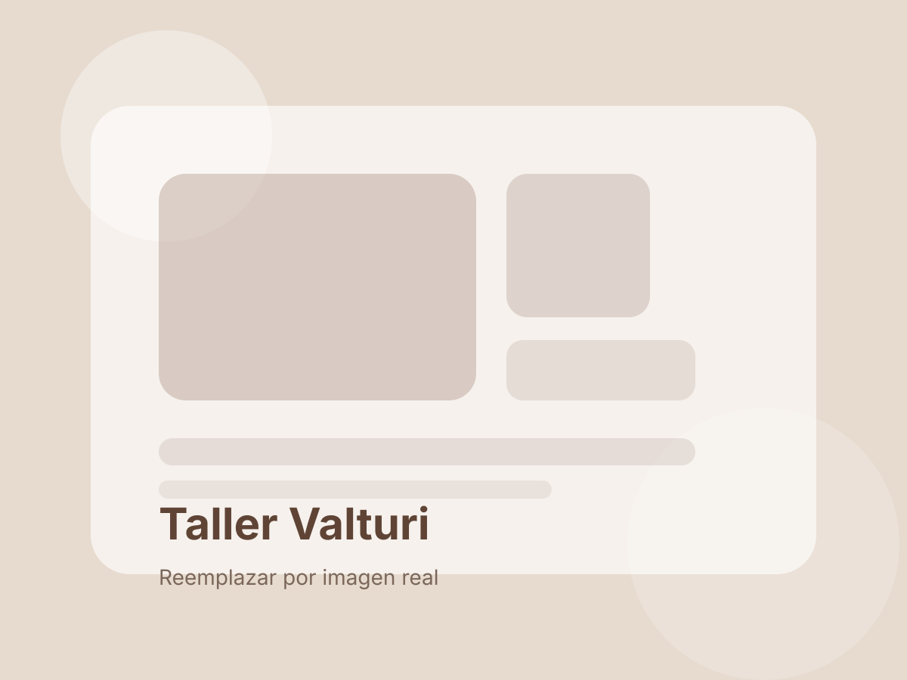

Manos que transforman.
Trabajo artesanal y atención en la forma, la comodidad y las terminaciones.
La mirada Valturi
Creemos en los muebles que tienen algo para contar. Y en el trabajo artesanal que transforma una pieza sin perder lo que la hace propia.

Desde Córdoba, con oficio.
Valturi es un proyecto de tapicería y restauración que une trabajo artesanal, diseño cálido y atención personalizada.
Restauramos y retapizamos muebles, y acompañamos la elección de telas, tonos y terminaciones. Buscamos que cada pieza vuelva a ocupar su lugar con comodidad y personalidad propia.
Nuestra manera de hacer
Trabajo artesanal y atención en la forma, la comodidad y las terminaciones.
Texturas y colores que acompañan el mueble, el espacio y la forma de habitarlo.
Escuchar, orientar y pensar cada renovación junto a quien la va a disfrutar.